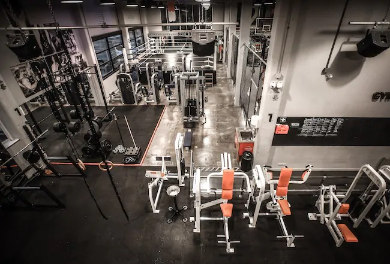
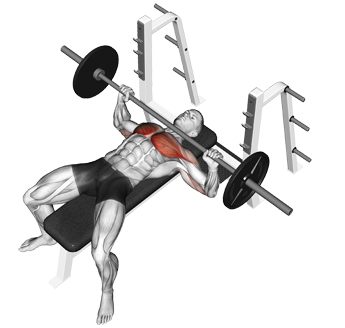

informatie over mijn hobby
welkom op mijn website ik ben ermin ik zit in klas 1H ik heb een hobby en een sport eigenlijk dat is gym ik ga der 4 keer in een week naar toe en doe het met plezier ik ga der ook soms met vrienden toe en dan gaan we samen trainen we vinden het allemaal leuk en het is interesant want je blijft progessie zien omdat je na een tijd steeds meer gewichten kan tillen informatie over mijn oefening
mijn favorite oefening is bankdrukken dat vind ik dan ook zeer leuk om te doen en kan lang door blijven gaan ik begon als eerst met 40 kilo en kan nu al 70 kilo tillen het is zeer goed voor je en je word er sterker van het is ook zeer leuk om te doen en als je met je vrienden gaat kunnen ze je ook helpen als je bijvoorbeeld meer wilt tillen maar je niet weet of het je gaat lukken dan kunnen zij je helpen op het einden je hebt ook verschillende manieren 